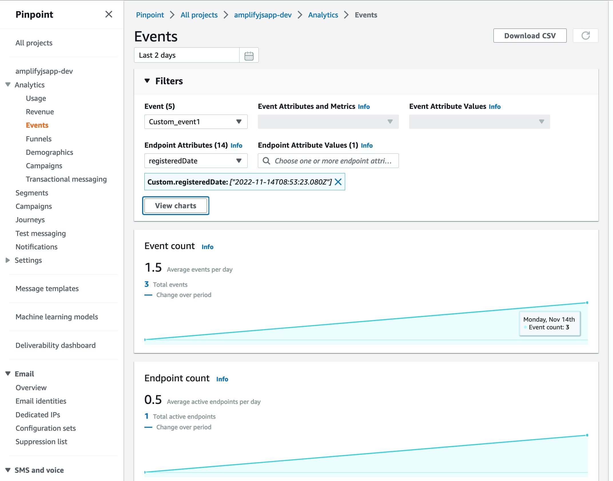
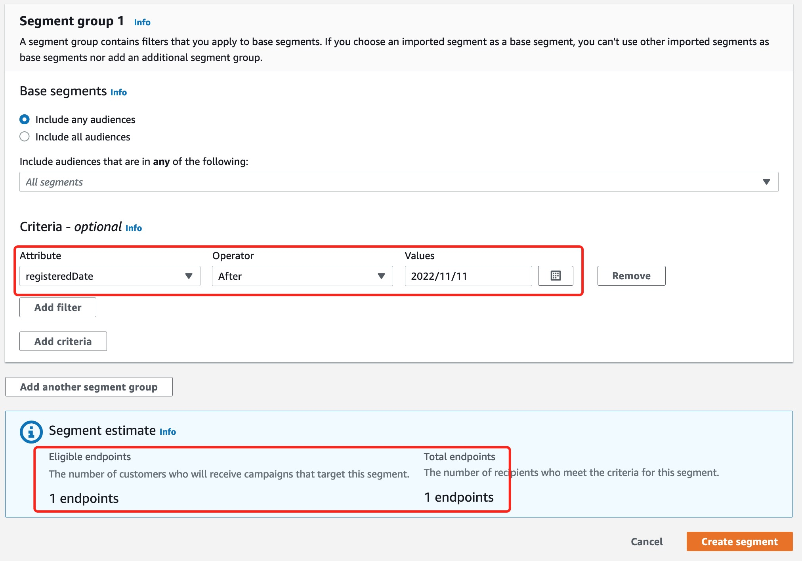

Amazon Pinpoint 的其中一个功能是收集客户端的用户行为，并发送到 AWS Pinpoint 服务中进行汇总分析，并结合动态 Segment 实现用户圈选，以及触发用户旅程（Journey），从而实现自动化的营销功能。
要使用 Pinpoint Analytics 的用户行为分析功能，我们需要在前端页面或者 App 中，使用相应的 JS 库注册当前用户，并对用户的行为埋点，即记录用户事件。我们有两种方式来使用 JS 库实现埋点。
在本文中，我们就介绍如何使用 Amplify 来为我们的前端应用添加用户分析的功能，并通过用户属性和 Pinpoint 的 Segment 功能，实现动态圈选用户，为后续的 Campaign 或者 用户 Journey 提供支持。
本文中，假设我们有一个前端页面是纯 JS 的应用，比如只使用了 JQuery 之类的库实现了前端交互。同时，这样的前端应用往往不会使用 NPM 这样的JS 库依赖管理功能，所以我们希望将 JS 库以及 初始化的方法打包好，在每个页面的 script 标签中引入这个包，然后使用 Pinpoint Analytics 的方法来记录事件。
如果您的前端应用使用了 Vue、Angular 或 React 等框架，可以参考 Amplify 在线文档 中的说明。
首先，在现有的前端应用的根目录，运行下面的命令初始化 Amplify。（有关 Amplify 工具的安装和设置，请参考官方文档）
amplify-js-app % amplify init
将看到如下的日志：
Note: It is recommended to run this command from the root of your app directory
? Enter a name for the project amplifyjsapp
The following configuration will be applied:
Project information
| Name: amplifyjsapp
| Environment: dev
| Default editor: Visual Studio Code
| App type: javascript
| Javascript framework: none
| Source Directory Path: src
| Distribution Directory Path: dist
| Build Command: npm run-script build
| Start Command: npm run-script start
? Initialize the project with the above configuration? Yes
Using default provider awscloudformation
? Select the authentication method you want to use: AWS profile
For more information on AWS Profiles, see:
https://docs.aws.amazon.com/cli/latest/userguide/cli-configure-profiles.html
? Please choose the profile you want to use MTProj
Adding backend environment dev to AWS Amplify app: d39nrrswky58lm
⠴ Initializing project in the cloud...
CREATE_IN_PROGRESS amplify-amplifyjsapp-dev-133145 AWS::CloudFormation::Stack Mon Nov 14 2022 13:31:50 GMT+0800 (GMT+08:00) User Initiated
CREATE_IN_PROGRESS DeploymentBucket AWS::S3::Bucket Mon Nov 14 2022 13:31:54 GMT+0800 (GMT+08:00)
CREATE_IN_PROGRESS AuthRole AWS::IAM::Role Mon Nov 14 2022 13:31:55 GMT+0800 (GMT+08:00)
CREATE_IN_PROGRESS UnauthRole AWS::IAM::Role Mon Nov 14 2022 13:31:55 GMT+0800 (GMT+08:00)
CREATE_IN_PROGRESS AuthRole AWS::IAM::Role Mon Nov 14 2022 13:31:56 GMT+0800 (GMT+08:00) Resource creation Initiated
CREATE_IN_PROGRESS DeploymentBucket AWS::S3::Bucket Mon Nov 14 2022 13:31:56 GMT+0800 (GMT+08:00) Resource creation Initiated
CREATE_IN_PROGRESS UnauthRole AWS::IAM::Role Mon Nov 14 2022 13:31:56 GMT+0800 (GMT+08:00) Resource creation Initiated
⠇ Initializing project in the cloud...
CREATE_COMPLETE AuthRole AWS::IAM::Role Mon Nov 14 2022 13:32:13 GMT+0800 (GMT+08:00)
CREATE_COMPLETE UnauthRole AWS::IAM::Role Mon Nov 14 2022 13:32:14 GMT+0800 (GMT+08:00)
⠧ Initializing project in the cloud...
CREATE_COMPLETE DeploymentBucket AWS::S3::Bucket Mon Nov 14 2022 13:32:17 GMT+0800 (GMT+08:00)
⠧ Initializing project in the cloud...
CREATE_COMPLETE amplify-amplifyjsapp-dev-133145 AWS::CloudFormation::Stack Mon Nov 14 2022 13:32:19 GMT+0800 (GMT+08:00)
✔ Successfully created initial AWS cloud resources for deployments.
✔ Help improve Amplify CLI by sharing non sensitive configurations on failures (y/N) · no
✔ Initialized provider successfully.
✅ Initialized your environment successfully.
Your project has been successfully initialized and connected to the cloud!
成功执行以后，它将在 AWS 创建几个角色，AuthRole 和 UnauthRole，用于已登陆的用户和匿名用户通过 Cognito Identity Pool 来访问 AWS 后端服务。由于我们现在还没有添加任何的其他服务，所以当我们查看这两个角色的 Policy 的时候，不会看到其他权限设置。
然后，我们将添加 Pinpoint analytics 服务，这个服务对应 AWS 的 Pinpoint 服务的事件分析功能。在根目录运行下面的命令：
amplify add analytics
它将提示我们创建一个 Pinpoint 的项目，我们需要提供一个项目名称。执行完成后，我们再运行
amplify push
运行 Push 以后，Amplify将会按照之前命令行的配置，为我们生成 CloudFormation 文件，并用该文件创建后台的 Pinpoint 资源。
如果我们已经创建好了 Pinpoint 的项目，想使用现有的项目的话，可以忽略 add analytics 的步骤，直接 push 即可，之后可以通过修改 json 配置来使用现有的 Pinpoint 项目。
通过 Amplify 工具添加服务之后，它通过 CloudFormation 来为我们创建 AWS 资源，然后将创建的资源的 id 等信息保存在 aws-exports.js 文件中。
运行上面的 add analytics 和 push 之后，它的内容如下：（在这个文件中，我们需要的主要是三个配置）
const awsmobile = {
"aws_project_region": "us-east-1",
"aws_cognito_identity_pool_id": "us-east-1:c923c1f1-285a-4b1d-acad-c19c61c2287f",
"aws_mobile_analytics_app_id": "1e4f01b0a02c495d96c9c8410eac246e"
};
export default awsmobile;
其中，aws_cognito_identity_pool_id 是 Amplify 为我们创建的 identity pool 的 ID，aws_mobile_analytics_app_id 是 Amplify 为我们创建的项目的 ID。如果要使用现有的 Pinpoint 项目，甚至现有的 Cognito Identity Pool，可以修改这个文件，使用现有资源的 ID 即可。
在官方文档中，使用 NPM 引入 aws-amplify 库，并使用 Webpack 进行打包。但是在我们本实例中，假设用户并没有使用 NPM 管理依赖。所以，我们的方法大致如下：
所以，我们按照上面文档创建一个js应用，并创建一些文件，其中 app.js 文件代码如下：
import { Amplify, Analytics, Auth } from "aws-amplify";
import awsExports from './aws-exports'
Amplify.Logger.LOG_LEVEL = 'DEBUG' // 开启debug，生产环境建议删掉这一行
const config = {
Auth: {
region: awsExports.aws_project_region,
identityPoolId: awsExports.aws_cognito_identity_pool_id
},
Analytics: {
// OPTIONAL - disable Analytics if true
disabled: false,
// OPTIONAL - Allow recording session events. Default is true.
autoSessionRecord: true,
AWSPinpoint: {
appId: awsExports.aws_mobile_analytics_app_id,
region: awsExports.aws_project_region,
mandatorySignIn: false,
// endpointId: '1234',
endpoint: {
address: 'aws-amplify-jsapp-123', // 只有 SMS、Email中有意义
attributes: {
hobbies: ['piano', 'hiking'] // 用户在该通道的属性
},
channelType: 'IN_APP', // 渠道类型，如果要通知，则需要设置相应类型
metrics: {
// Custom metrics that your app reports to Amazon Pinpoint.
age: 39
},
optOut: 'NONE',
// Customized userId，一个用户可以有多个 endpoint
userId: 'mav_123',
// User attributes
userAttributes: {
interests: ['football', 'basketball', 'AWS'],
FirstName: ['Mavlarn']
}
}
}
}
}
Amplify.configure(config);
const currentAuthConfig = Auth.configure();
console.log('amplify auth config:', JSON.stringify(currentAuthConfig))
// 将这两对象放在window，可以作为全局对象使用，而无需通过 import。
window.Amplify = Amplify
window.Analytics = Analytics
代码中的设置以及其作用以及在代码中注释，这里就不再赘述。
项目的其他文件的代码都跟上面的文档中一样，完成后运行 npm dev，就可以编译生成 bundle js文件在 dist 目录中，我们就可以在其他页面引入这个文件，并记录事件：
<!DOCTYPE html>
<html lang="en">
<head>
<meta charset="utf-8" />
<title>Amplify Demo</title>
<meta name="viewport" content="width=device-width, initial-scale=1" />
</head>
<body>
<div class="app">
<div class="app-header">
<button onclick="recordEvent()">Record Event</button>
</div>
</div>
<script src="main.bundle.js"></script>
<script>
function recordEvent() {
// 由于我们已经通过 window.Analytics = Analytics 将它作为全局对象，所以可以直接调用它的方法。
Analytics.record({ name: 'Custom_event' }); // 记录自定义事件 Custom_event
}
</script>
</body>
</html>
这个 js 应用实例的完整代码，可以参考 Github 上的实例项目。读者可以直接从这个实例项目中的 dist 文件中找到已经打包好的 hundle.js 文件，然后修改其中的 aws_mobile_analytics_app_id 等配置来直接使用。
我们提到我们使用 Pinpoint Analytics 的事件分析功能，一个主要目的就是结合 Campaign 和 Journey 功能，实现动态的选择所需的用户。例如在一个 Campaign 活动中，我们想要选择一天之内注册的用户，那我们就可以给用户的 Endpoint 设置一个 registeredDate，值就是注册时间，然后在 Campaign 的 Segment 里，创建一个动态 Segment，其条件就是注册时间晚于一天前。
所以，我们可以在应用中适当的地方更新用户的 Endpoint：
<html lang="en">
<body>
<div class="app">
<div class="app-body">
<h1>Update Endpoint</h1>
<button onclick="updateEndpoint()">Update Endpoint</button>
</div>
</div>
<script src="main.bundle.js"></script>
<script>
function updateEndpoint() {
Analytics.updateEndpoint({
attributes: {
registeredDate: [new Date()]
}
})
}
</script>
</body>
</html>
在该实例的 html 中，我们引入了之前打包的 hundle.js 文件，当用户注册成功后，就可以调用 Analytics.updateEndpoint(...) 方法，并设置 attributes 属性，它是一个对象，它的值会被添加到当前的 Endpoint 的属性当中。我们可以使用这样的方式来给当前用户设置各种业务标签，然后用这些标签来过滤用户。
在页面点击按钮记录事件，或者更新 Endpoint 属性之后，我们就可以在 AWS Pinpoint 的 Console 中查看记录的事件。打开 Console，进入 Pinpoint 服务，在项目列表中找到并点击创建的项目，这里是 amplifyjsapp-dev。在左侧菜单中找到 Analytics - Events，就可以看到统计的 Event 信息。
如果想要得到所有事件的明细，可以通过设置 Kinesis Stream 将事件流写到 Kinesis 中然后自行处理， 或者 使用 Kinesis Firehose 将事件写到 S3 或其他位置。
打开 Event 试图，就能够看到事件统计。 
默认我们只能按天查看事件的汇总图标，我们可以启用 Filters 功能，来按照事件类型、属性来进行搜索和过滤。例如这里，我们在页面中记录了自定义事件 Custm_event1，我们就可以按这个事件来查看每天的事件数量。也可以按照该事件的属性（如果有的话），或者按照 Endpoint 的属性来进行过滤。
我们在实例中，通过 updateEndpoint 更新了Endpoint 的属性值，也可以更新用户属性（userAttributes），或者 Metrics，这些都能用来作为创建动态 Segment 的条件。
Analytics.updateEndpoint({
attributes: {
registeredDate: [new Date()]
},
userAttributes: {
lastOrderProducts: ['football', 'iphone', 'TV'],
userType: ['vip']
},
metrics: {
age: 35
}
})
其中 attributes、userAttributes 属性都是 key-value 的对象，它们的值都必须是一个列表。而 metrics 顾名思义，就是一个指标，值应该都是数值类型。
然后就可以在创建 Segment 的时候，使用这些属性来动态创建 Segment，按需选出想要的用户： 
这里，我们使用用户的注册时间晚于11月11号这天作为条件，选出了刚才的实例中测试的那个用户的 Endpoint，这样就可以结合 Campaign 或 Journey 进行其他的自定义的触达活动。创建 Campaign 或 Journey 的其他步骤不是本文的内容，就不做介绍，需要的可以参考相关文档。